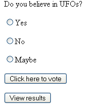
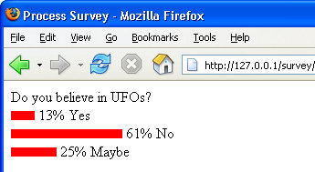

PHP Survey App - Intro
The Survey web application consists of 5 PHP files and a database. You'll see what they all do as we go along. But there are separate sections: A section where you can set a question for your visitors; a section that allows visitors to vote on your question; and a section where the results can be viewed.
The Survey itself
The survey that your users will see looks like this:

The Results Page
When you click the Vote button, your choice will be recorded in the database. If you click the "View Results" button, you'll see this:

Set a Question for your Survey
To set a question for your survey, you simply type the question into textboxes on a form. You then set the options that a visitor can choose from. The Form to set a question looks like this:
The Form to set a question (opens in a new window - 43K)
Getting prepared - Check if your downloaded files work
To test this out, locate the folder called survey, which is amongst the files and folders you downloaded (in the scripts folder). Copy the entire survey folder over to your www folder. Now start your server and load up the setQuestion.php page in your browser by typing:
127.0.0.1/survey/setQuestion.php
Or you can use localhost instead:
localhost/survey/setQuestion.php
You should see the web page as above that allows you to set a question. This is just a simple HTML form that has no special formatting applied, and so looks a bit messy! But you can use this to add questions to your Survey database.
But don't click the button on the form yet, or you'll get an error message. First, copy the database folder called surveytest to your mysql/data folder. For Wampserver users this should in the following location;
C:\wamp\bin\mysql\mysql5.5.8\data
To see if the database has been copied ok, type this into the address bar of your browser (this assumes that your server is up and running):
http://localhost/phpMyAdmin/
What you're trying to do is to bring up the phpMyAdmin page. This one:

If you can see the phpMyAdmin page, then click the dropdown list for databases.
You should see the surveytest database on the list. We'll look at that in more
detail in the next part, because it's the key to understanding how the survey
web application works.